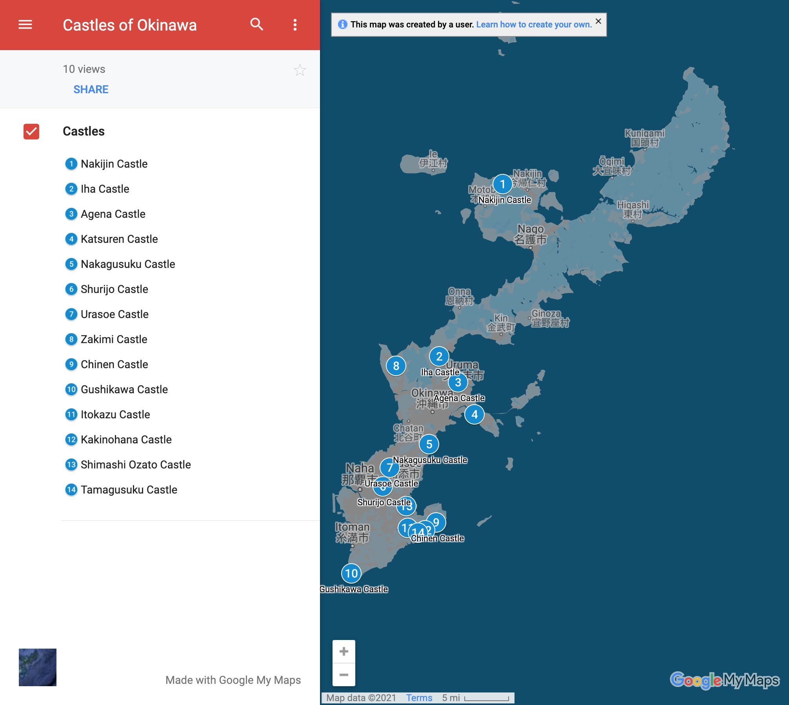

Introduction
What's in the Guide?
- 11 Castles
- 3-star rating system
- Photos
- Points of Interest
- Getting There and Parking
- Where to Eat
- Side Trips
- Overview
- On the Trail
- Maps
Why Create a Guide?
I originally had the idea for this guide as a kind of augmentation to the Okinawa Island guides the US Marine Corps MWR (Moral Welfare and Recreation) usually handed out to servicemembers new to the island. As I dug into the content for this guide, I began to realize I had been to the castles, but hadn't really seen them, I had missed many exciting and interesting details. So, this guide is an attempt to make up for that loss, and to both help and serve other island adventurers, hikers, history buffs, families with children, deployed service members, ESL teachers, and the just plain curious, to discover the amazing castles that have been patiently waiting for +500 years for you to discover on Okinawa.
How to Use this Guide
The guide is divided into the Introduction section, then a section for each region of the main Okinawa Island: Hokuzan (North), Chuzan (Central), Nanzan (South). Each castle has a full-page photo, a 1-page summary, a 3-star rating, and short paragraphs for "Points of Interest", "Getting There and Parking", "Where to Eat", and "Side Trip". After the 1-page summary is a multi-page "Overview" and "On the Trail" descriptions of what you can expect as you make your way through the castle gates and journey back into history. It's my sincerest hope you'll enjoy this guide and the best compliment you can give is to share and recommend this to your family and friends.
Regions
Okinawa Island is approx 100 km north to south, and on average 11 km east-west, and broken up into 3 historical regions during the Sanzan (3 mountain) period of 1314-1429. They were:
- Hokuzan in the north
- Chuzan in the central area
- Nanzan in the south

Photo by kallgan/CC BY-SA-3.0
The Maps
Maps and satellite views are provided to show both general location and points of interest in the area of the castle, and nearby.
The 11 castles covered by this guide are shown below.

Map data ©2021 Google
The online version of this map is available here:
Star Rating System
Each castle has been rated on a 3-star grading. You don't want to miss great sites, but even the OK sites are often worth your while, as castles are often built atop ridges and hills with spectacular vistas. Okinawa is a breath-takingly beautiful island, and even a site with scattered ruins can often be a wonderful experience for young and old.
Castle Rating
| ⭐⭐⭐ | Great |
| ⭐⭐ | Good |
| ⭐ | OK |
Vocabulary
| Okinawa - 沖縄 | bay: wan - 湾 |
| Naha - 那覇 | beach: hama - 浜 |
| Nago - 名護 | river: kawa/gawa - 川 |
| city: shi - 市 | hill: oka - 丘 |
| north: kita/hoku - 北 | mountain: yama/san/zan - 山 |
| east: higashi - 東 | cave: do - 洞 |
| south: minami/nan - 南 | valley: tani - 谷 |
| west: nishi - 西 | waterfall: taki - 滝 |
| small: ko/cho - 小 | park: koen- 公園 |
| medium/center: chu/naka - 中 | garden: teien - 庭園 |
| large: dai/okii- 大 | castle: gusuku/shiro - 城 |
| point: saki/zaki - 崎 | ruins: ato - 跡 |
| sea: umi/kai - 海 | temple: ji - 寺 |
Okinawa Castles 101
Okinawa really is an island paradise, and it seems like everywhere you turn, you'll stumble over an ancient castle wall or discover some new historical ruins. On the https://gusukumitisirube.jp website alone, they list 211 castle ruins, not including additional holy sites. I attempted to cover the best representative castles, and left out many sites that although may be historically significant, might not warrant a day trip.

Photo by Fg2/Public Domain
The Okinawan word for castle or fortification is gusuku. They are typically found on ridges and hilltops, although there are some exceptions. The height of the gusuku period was during the 12-15th centuries, and were constructed for the regional leaders called Aji (按司). Agriculture was believed to have begun in Okinawa between the 10-12th centuries. The only fully reconstructed gusuku is Shuri Castle in Naha. In this book, we cover the 5 castles that are designated as UNESCO World Heritage sites: Nakagusuku, Katsuren, Nakijin, Zakimi and Shuri Castle. Shuri was the only castle to be used by an Okinawan king, Sho Tai, in modern times. The building techniques used to create the gusuku were likely transmitted from Miyako Jima (宮古島) and Yaeyama (八重山) Islands to Okinawa. Many of the sites are nothing more than large archeological areas that have been designated as parks and/or historical sites. Some castles have original walls in various states of disrepair, and some have partially or fully reconstructed walls. Often you'll notice different original construction styles at the same location that organically occurred after generations of use. The first three small kingdoms to rise at the beginning of the gusku period also known as the Sanzan (3 mountain) Period, were Nakijin Castle (今帰仁城) of the northern mountain (Hokkuzan), Urasoe Castle (浦添城跡) of the central mountain (Chuzan), and Nanzan Castle (南山城) from the southern mountain (Nanzan). All three paid tribute to the Chinese emperor during the Ming dynasty (1368-1644). Of the three, Urasoe was the most powerful at that time. Sho Hashi from Sashiki Castle (佐敷城), in the south eventually overthrew the Urasoe kingdom (Chuzan) in 1405 and unified the 3 kingdoms in 1429, creating the Ryukyu Kingdom. For a period of nearly 100 years, local Aji still struggled with civil war and political turmoil, and in 1523, all local Aji were moved to Shuri Castle bringing an era of stability and making Shuri the focal point of Okinawan culture, politics and economy.

Photo by Almighty Franklinstein/CC BY-SA-2.0
The castles that made the list for this guide were chosen to be easiest to find with Google Maps and Apple Maps. Many other Okinawan guidebooks mention castles in passing, but don't give specifics which leads to frustration when attempting to locate the site. There are many, many more castle ruins than shown in this guide, be on the lookout on your travels, and you'll be pleasantly surprised at finding small roadside signs that end up leading you to some offbeat castle ruins.
Every castle here is worth a day trip. Atop the castle walls, it's not hard to imagine a guard or an Aji surveying his area of responsibility, it really makes the history of this magical place tangible. I hope you'll catch the bug and make exploring gusuku part of your itinerary while travelling in Okinawa.
Visiting Castle Sites
Okinawa has first rate roads and highways, all the main sites have parking and signage, and some charge admission, it helps to always have some local currency, and often cold and hot beverages are available along the roadways at vending machines.

Photo by Boudewijn Huysmans/CC0 1.0
You'll want to feel comfortable with Google/Apple maps before going and plan to stop for refreshments and/or lunch/dinner on the way back. There are plenty of convenience stores like FamilyMart, HotSpar, Lawson, 7/11 and fast food options abound like A&W, MOS Burger, KFC, McDonalds. Feel free to get out of your comfort zone, and try Okinawa soba, ramen, Japanese curry, or festival/comfort food when it's available. (takoyaki, taiyaki, yakitori, okonomiyaki, etc.)
Planning Your Visit
The biggest concerns while out on the trail are: sun exposure, heat/humidity and weather/rain. The average temperature is 73°, and average rainfall is 72". Okinawa is subtropical, so bring your sunscreen, wide-brimmed hat, and plenty of water (hydration backpack, water bottles, etc). If you do have a small backpack with you, it doesn't hurt to bring hydration tablets, compass (your phone may already have one), small first aid kit, external battery for your phone, and a portable umbrella - for sun or rain. Back in the car, I typically have a cooler with ice, extra water, rehydration drinks, ice coffee and snacks. When hiking, I also wear hiking shoes, comfy socks, and a buff (stretchy ring of fabric), to keep the sun off the back of my neck, cheeks and nose. Okinawa does have 1 species of venomous snake, locally called the habu (Protobothrops flavoviridis), it's primarily nocturnal, and most active September through November, and bites about 50 people per year on the island, and is fatal in about 1% of cases. Remember if it looks like a stick on the trail, double check that it's not a snake.

Weather data ©2021 Google
Sensitivity to Cultural Sites
Exploring and discovering castles is exciting business, it's an amazing feeling to walk along stony paths, under torii gates and ancient gajumaru (banyan) trees. The stone walls are dark and undulating and up top the subtropical sun beams, and the blue-green waters of the East China Sea to the north-west and the Philippine sea to the south-east seem to glow. It's also an opportunity to get your steps in, but also remember to be a good neighbor and ambassador while visiting. Some sites will have religious significance and one out of the way sites I visited had human remains visible in an alcove. Some entrances to caves and tombs have light fencing that is more of a suggestion than a barrier, but it's our responsibility to respect the local traditions, history, other visitors, and not overstep our bounds.

Photo by 松岡明芳/CC by SA 4.0
Architectural features
Castles in Okinawa are known as gusuku (城), you'll often see it in the name of a castle, like Nakagusuku, which translates to naka=middle/central and gusuku=castle/fortification. The term can be a bit confusing because gusuku has connotation with sacredness, and some locations that are called gusuku don't necessarily have walls or military significance. The castles/gusuku we cover have some similar architectural features that typically include:
- Walls - original walls are typically limestone or coral, reconstructed walls are typically limestone masonry. There are 3 main types of wall constructions in Okinawa: nozura-zumi (rubble), nuno-zumi (Ashlar masonry), and aikata-zumi (turtle-back). Examples of all 3 can be seen at Nakijin, Nakagusuku, Shuri and Zakimi Castles.
- Nozura-zumi: the rocks are not modified, and are stacked to create the walls looking like mounds of rubble.

Photo by captain76/PD - Nuno-zumi: have more familiar rectangular shapes and lines similar to Ashlar masonry. This is often seen on corners and gates, where heavy, precisely cut stones are required.
- Aikata-zumi: These are cut in polygons, or "turtle-back" shapes. Makes for a very strong wall in all directions, like a completed puzzle.

Photo by 663highland/CC BY 2.5
- Nozura-zumi: the rocks are not modified, and are stacked to create the walls looking like mounds of rubble.
- Bailey - also known as wards, are areas surrounded by a curtain wall. They can be sequential, or concentric, or any combination sharing one or more wall
Google Map data ©2021 - Gates - heavily fortified and sometimes included a stone arch, or a tower. Passing through the gates gives you a reminder of how thick the walls really are.

Almighty Franklinstein/CC BY SA 2.0 - Main Hall - Or Great Hall / Seiden (正殿) was the room for affairs of state including celebrations and audiences. Shuri Castle has a reconstructed Main Hall, and at other castle sites, you may see the posts or post holes that elevated the main hall and other buildings.
Google Map data ©2021 - Utaki (御嶽) - is an Okinawan term that indicates a sacred place, that is often in or near the castle. It can be a mountain, a grove of trees, grotto, cave, spring, etc that has particularly religious meaning.
Okinawa Castles in the Movies
Karate Kid II

Photo by Fair Use
In the movie, "Karate Kid II", Daniel and Kumiko visit the expansive coastal castle of Sho Hashi, the last king of Okinawa. Where is that castle? Is it still standing? Truth be told, the movie was filmed exclusively in Oahu, Hawaii, so no actual castles were used, but it does beg the question, was the movie's castle inspired or modeled on a real one? Let's find out.
Here's a clip that shows the castle in Karate Kid II:
Karate Kid II - The Castle
The historical king Sho Hashi mentioned in the movie, has 5 castles closely associated with his rule, so we'll touch on those, but there's a 6th castle that I think could have been the inspiration for the movie.
Castle Candidates for Karate Kid II
- Sashiki Castle
- ⭐⭐Urasoe Castle
- ⭐⭐⭐Nakijin Castle (UNESCO 972-003)
- Nanzan Castle
- ⭐⭐⭐Shuri Castle (UNESCO 972-007)
- ⭐⭐Gushikawa Castle (Itoman)
Sho Hashi began as the Aji (local leader) of Sashiki Maguri (district) in the Chuzan (central Kingdom) during the Sanzan (3-kingdom) period. Initially, Sho Hashi would have called Sashiki Castle his ancestral home. There is a shrine now at Sashiki Castle, but not even the castle walls remain at this site.

Photo by Sturmgewehr88/CC BY-SA 4.0
Sho Hashi began his expansion from Sashiki castle to overthrow the central kingdom of Chuzan, which was headquartered at Urasoe Castle. At that time, this was the largest castle on Okinawa, and today is an easy visit just north of Naha.

Photo by あばさー/PD
Next, Sho Hashi spread his reign north with the capture of the Hokuzan (northern) kingdom and the surrender of Nakijin Castle. This is the only remaining castle in the Hokuzan (north) region, and is a great spot to enjoy the cherry blossoms in January and February, and is a peaceful spot to visit with great views of the ocean. It's now a UNESCO World Heritage site.(UNESCO 972-003)

Photo by FoxyStranger Kawasaki CC BY-SA-3.0
Finally, Sho Hashi's take over of the southern (Nanzan) kingdom Nanzan Castle brought the 3rd and final region under his reign. Today's there's only a shrine and an elementary school that stand on the spot of the mighty southern castle.

Photo by Kugel PD-Self
By uniting the 3 regions of: Hokuzan, Chuzan, Nanzan, Sho Hashi created the Ryukyu Kingdom, thus ending the Sanzan (3-kingdom) period. Sho Hashi set up residence at Shuri Castle, which is the best maintained castle today, and is also a UNESCO World Heritage site.(UNESCO 972-007)

Photo by Savannah Rivka CC BY-SA 4.0 INT
And finally, the last castle in our list is Gushikawa Castle. This is my best guess at a location that matches what they were trying to come up with in Karate Kid II. An ancient castle, built along the water with a fantastic backdrop. Although not linked to Sho Hashi's rule like the previous castles, and not as mighty as any of them, Gushikawa Castle it is the only existing coastal castle I've found that still has walls, and you can visit.

Photo by Captain76/Public Domain
It's located on the very southern tip of Okinawa near Cape Kyan and the Kyan lighthouse. The two things that make this castle so unique are it's location, and a secret sea cave. It's built on a rocky outcrop which affords it views of the ocean on three sides, and it's rubble style walls drop down to the sea cliffs, making this castle quite a photo op, there's a blowhole inside the first bailey which drops down to a secret sea cave below. The story with the cave is that it could have been used to bring up supplies or perhaps for a quick getaway. As an added bonus, Gushikawa Castle is about 100m west of a popular cliff diving and swimming hole. Definately worth your time to check out.

Photo by Captain76/Public Domain
Chasuke's Journey

Photo by Fair Use
In this 2015 Japanese movie, "Chasuke's Journey", the protagonist, Chasuke, is heaven's tea server, and Nakagusuku Castle becomes the backdrop for heaven. Here's the trailer showing the distinctive outerwall (warning, if you blink, you'll miss it):
Chasuke's Journey
Zinnia Flower

Photo by Fair Use
In this 2015 Taiwanese movie, "Zinnia Flower", one of the 2 main characters, Ming visits Shuri Castle. Here's a trailer that shows Ming approaching the gates of the castle:
Zinnia Flower - Shuri Gate
And in this scene from the same trailer, you see the wall of the castle:
Zinnia Flower - Shuri Wall